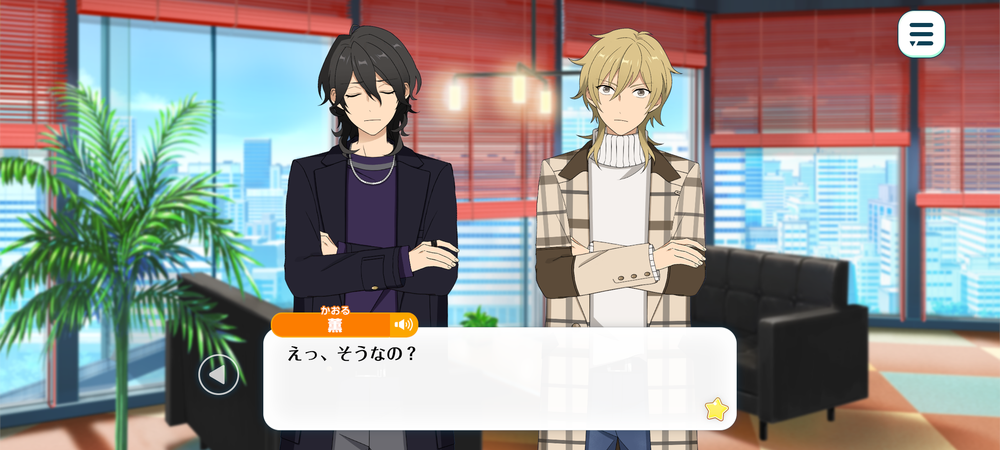
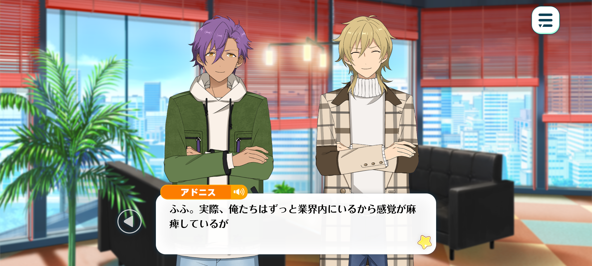
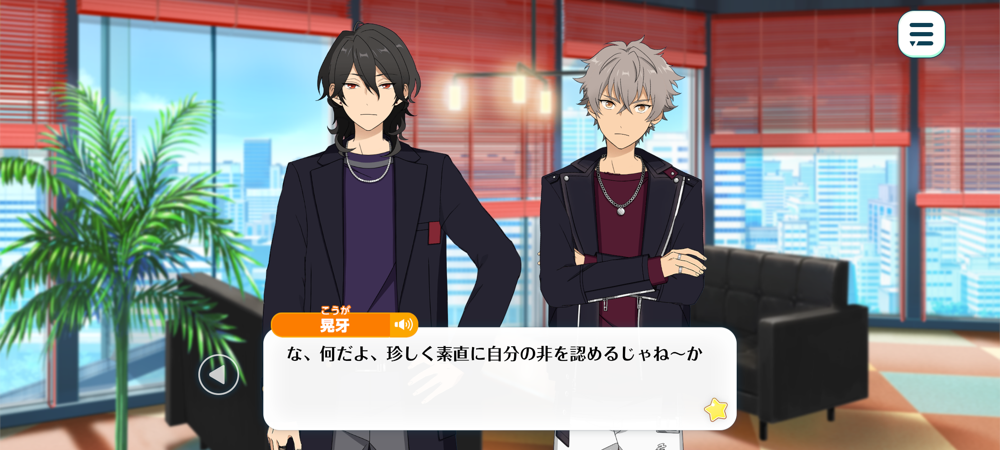
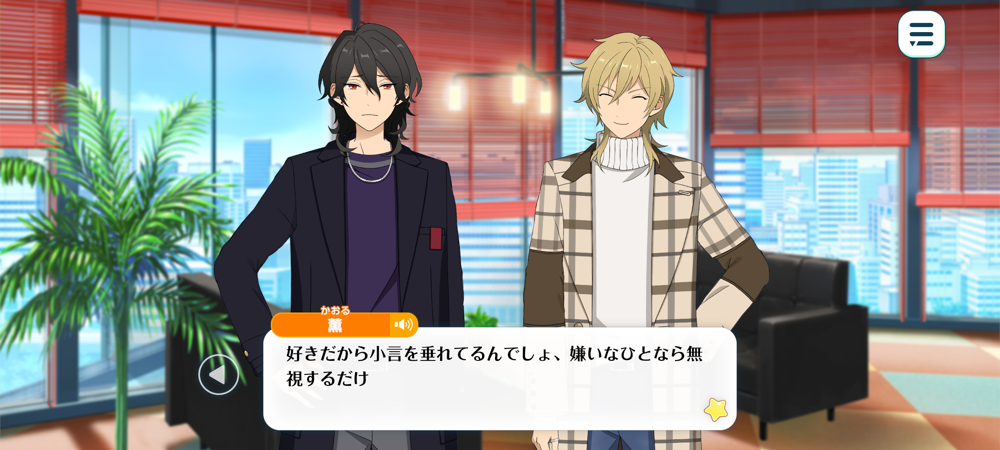

Flashback
BIOHAZARD – Chapter 1


Season: Winter
Time: Flashback. Middle of February, the first year of ES’ establishment
Location: RhythmLink Office

Rei: This is a rather serious state of affairs.
UNDEAD has been losing a considerable number of fans as of late.
It's been happening for some time now, but recently, the decline has become quite apparent in the numbers: concert attendance, CD and merchandise sales, and so on.
Kaoru: Oh, really?
That's surprising...! If anything, I feel like the fans have been even more enthusiastic about seeing us at signing events than they were back in our Yumenosaki days.
Maybe we're not really losing fans so much as our audience is changing? I mean, ever since we joined ES, we've started appearing on variety shows that even kids can enjoy.
Kids don't exactly have much pocket money to spend, after all. They can't afford things like concert tickets and CDs.
So when you look at the overall figures, it might just seem like our sales are going down.
Koga: Hah! For a rich boy, you sure know a lot about the struggles of ordinary people!
Kaoru: Even I have my fair share of problems, you know. My parents are actually pretty strict.

Adonis: Fufu. It's true that we've been in the industry for so long that we've lost sight of what's normal for most people.
From the perspective of an ordinary child, concert tickets and things such as that must seem incredibly expensive.
And if they keep asking for money to buy them, I imagine their parents would eventually get fed up with it.
Kaoru: Right, right! They'd probably say something like, “Instead of wasting your money on silly things like that, why don't you buy some study guides?”
Adonis: Are you speaking from personal experience?
Kaoru: Not quite, but when I told them I wanted to go to an idol training school, they certainly weren't shy about making their disapproval known.
Rei: We seem to have strayed somewhat from the matter at hand. Of course, the factors Kaoru-kun mentioned are certainly part of it. Even so, our sales have fallen to a level we can no longer afford to overlook.
The truth is, UNDEAD is past its prime.
Koga: That's exactly why I was against it! Goin’ on those all bubbly and cheerful variety shows doesn't suit our image at all!
If we'd just stuck to lettin’ our music speak for itself, showing everyone how cool we are—
Adonis: –I believe we would have fallen even further behind as idols who couldn't keep up with the times or read the room.
It was precisely because we recognised that danger that we deliberately took on the sort of work you dismiss as frivolous, Oogami. Things like appearing on variety shows.
Rei: Though, truth be told, we also wanted to try our hand at that sort of work. Still, as Koga says, we must take responsibility for the situation we've found ourselves in.

Koga: W-what's this? You're actually admittin' you're in the wrong for once. That's a first.
Rei: There's little point in stubbornly refusing to acknowledge one's own shortcomings. Besides, even if I were to make a complete fool of myself now, I doubt everyone would suddenly start despising me for it...♪
Kaoru: Ahaha. I really can't stand that arrogant side of you~. It's all the more irritating because you're right, too! ♪
But there's something else that bothers me. You always make it sound as though everything is your responsibility. If it's a problem for UNDEAD, then it's a problem for all of us, isn't it? You don't have to shoulder the entire burden by yourself.
Adonis: Quite right. Sakuma-senpai does have a tendency to act that way. But we're not children who need someone else to take responsibility for us.
Koga: Right!? That's exactly the sort of thing that really pisses me off about you~♪
Rei: Oh? Have I become rather more unpopular than I realised...?

Kaoru: We're only giving you a hard time because we like you. If we didn't, we'd just ignore you.
Rei: Hmm... In any case, to return to the matter at hand, I believe one of the reasons we've found ourselves in this predicament is that we've been rather ambiguous in the image we wish to present.
UNDEAD was originally conceived as a unit that performed edgy, transgressive rock music, with an image that deliberately kept outsiders at arm's length.
Lately, however, we've been doing quite the opposite. Through our appearances on variety shows and the like, we've been highlighting our more approachable side and participating in activities that run counter to our original image.
In essence, we've cultivated the impression that, “Oh? UNDEAD look rather frightening and unapproachable, but they're actually surprisingly easy to get along with!”
As a result, offers to appear on variety shows came pouring in, and we certainly succeeded in attracting a wider audience...
However, in doing so, we've clearly disappointed those fans who fell in love with the original UNDEAD.
Koga: Doesn't that mean we've got our priorities all backwards, then?! The fans we should've been payin' attention to were those so-called hardcore fans!
Not these shallow, fickle newcomers who've started actin’ like they know us just because they've seen us on a few stupid variety shows!
Rei: No. Both groups are of equal importance.
Naturally, we must cherish the fans who have supported us from the very beginning. But unless we continue to win over new fans as well, we'll eventually burn out like a sparkler, our light fading all too soon.
Such is the nature of the idol industry we belong to— or, indeed, the entertainment industry as a whole.
It is not as simple as believing that, so long as one works hard enough, success is guaranteed and the love of one's fans will last forever..